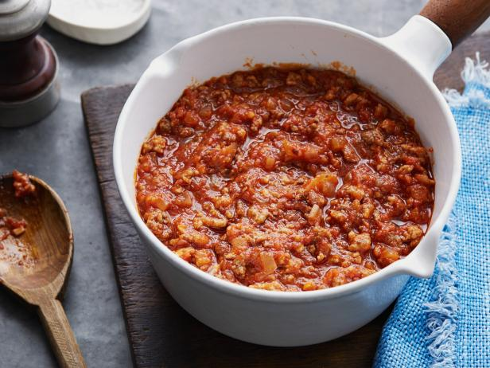

Bolognese

Bolognese is a rich meat sauce originating from 18th century Imola, a city near Bolonga, Italy. This hearty sauce is commonly used in pasta dishes such as lasagna or tagliatelle. Bolognese is a rich, thick sauce that develops over the course of a multiple hour cooktime. It starts off thin with a highly acidic taste due to the raw tomatoes, but after simmering for anywhere from 2-5 hours the sauce transforms to have a thicker texture that sticks to the pasta. The flavor also transforms to be much deeper with a pleasant sweetness complemented greatly by grated parmesan cheese and fresh basil.
Ingredients
- 1 tablespoon vegetable oil
- 3 tablespoons butter plus 1 tablespoon for tossing pasta
- 1/2 cup medium diced onion
- 2/3 cup medium diced celery
- 2/3 cup medium diced carrot
- 3/4 pound ground beef chuck, 1 part pork to 2 parts beef is an option
- Salt to taste
- Fresh black pepper to taste
- 1 cup whole milk
- Fresh grated nutmeg to taste
- 1 cup dry white wine
- 1.5 cup canned plum tomates, with juice
- 1.5 pounds pasta of choice
- Fresh parmesan cheese
Method
- In a seperate pan, brown at least half of the ground beef. You don't have to cook it all the way through, this step is just to get some browning on the outside. This lends a much deeper umami to the sauce and will deepen the color.
- Add vegetable oil and butter to a large pot and turn the heat to medium. Once the butter has melted add the onions and sauté until translucent, about 3 minutes. Add celery and carrot, sauté for an additional 2 minutes.
- Add ground beef, a large pinch of salt and a small pinch of black pepper. You can always taste and adjust once the sauce has had some time to cook and develop. Cook until the beef has lost any remaining red color.
- Add milk and simmer gently, stirring often until the bubbling subsides. Grate in a small amount of nutmeg, about 1/8th teaspoon, and stir.
- Add white wine, simmering until significantly reduced. Add in tomatoes and juice, when the sauce starts simmering again lower the heat until you see occasional bubbles. Lightly simmer while uncovered for 3-5 hours, stirring every once in a while to prevent sticking. If the sauce is becoming too thick for your liking add water or chicken stock until you reach the desired consistency.
- Cook pasta for producers recommended time near the end of the sauces cook time, toss pasta with butter and top with sauce. Grate fresh parmesan and serve.